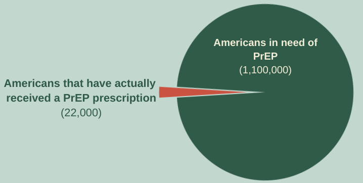
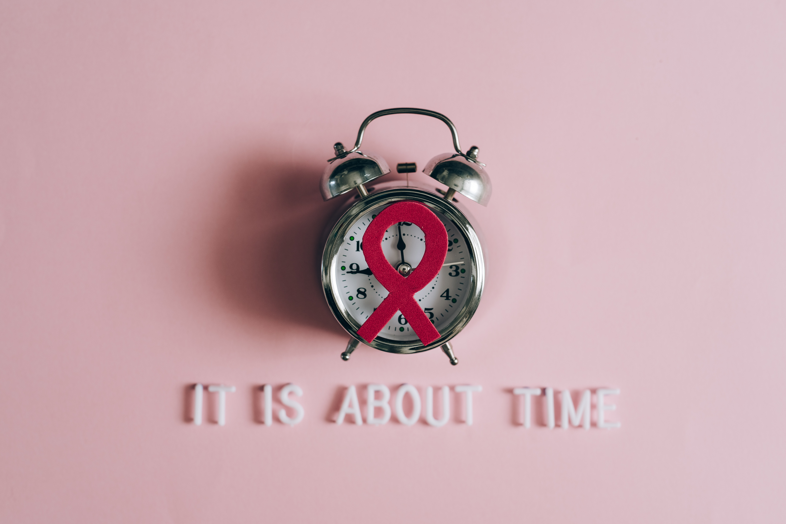

The Strenghening Advancements in HIV-Prevention Act(SAHP)
In 1980, Ken Horne became the first person in the United States to die of HIV/AIDS. 42 years later,
800,000 Americans have followed him to their death. Since 1980, we have developed medication that can completely
prevent the contraction of HIV (PrEP, or pre-exposure prophylaxis).
So, why did 18,000 Americans with AIDS die last year?
Photo Courtesy of Heba Mohiuddin
Rising Rates of HIV/AIDS
Despite pledges to end the HIV/AIDS epidemic from every President of the last two decades, HIV/AIDS rates are rising in the
United States. PrEP can completely prevent HIV/AIDS, but many Americans are struggling to get it. Barriers in access include:
- High out-of-pocket costs
- Exclusive availability at specialized locations
- Court cases around the U.S. inhibiting access to PrEP and other preventative medicine and services

About SAHPA
The Strengthening Advancements in HIV Prevention Act has the potential to reach every American and finally
eradicate the HIV/AIDS epidemic. This bill does so by directing the Secretary of Health and Human Services, the
Secretary of Labor, and the Secretary of Treasury to ensure that:
- PrEP is provided to insured Americans
- Pharmaceutical companies do not price-gouge patients who need PrEP
- Healthcare plans do not introduce excessive roadblocks and red tape that inhibit access
From Pexels (By Leeloo Thefirst)
Proven Effectiveness
These measures have been proven to be effective. The year a similar PrEP bill was passed in California, new
HIV/AIDS diagnosis rates plummeted by more than 12%. Federally, we have also seen the efficacy of easy
medication access with COVID-19 vaccines that brought infection rates down by more than half following equal
access orders.
Ensuring equal access to PrEP medication will increase accessibility and decrease new diagnoses of
HIVIAIDS, enabling the end of this 42-year-old epidemic.
1. 8,000 deaths. CDC.gov. Retrieved from: https://www.cdc.gov/hiv/basics/statistics.htm
2. 1.1 million need PrEp. Advances in Therapy Journal. Retrieved:https://link.springer.com/article/10.1007/s12325-020-01295-0#article-info
3. California PrEP bill. California Department of Public Health. Retrieved: https://www.cdph.ca.gov/Programs/CID/DOA/CDPH%20Document%20Library/California_HIV_surveillance_Report2020_ADA.pdf